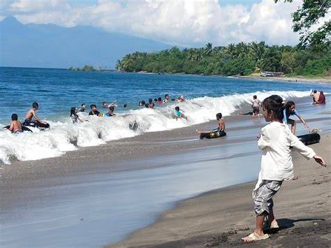

Profil Daerah
Asal sekolah: SMAK Santo Yosef.
SMAK Santo Yosef merupakan salah satu sekolah yang menjadi tempat untuk mendapatkan pendidikan dan mengembangkan pengetahuan serta keterampilan siswa. Sekolah ini memberikan kesempatan kepada siswa untuk belajar, mengembangkan potensi, dan mempersiapkan diri untuk melanjutkan pendidikan maupun menghadapi dunia kerja.
Keindahan Pantai
Keindahan pantai di daerah saya dapat dinikmati melalui pemandangan laut, pasir pantai, serta suasana alam yang tenang. Pantai juga dapat menjadi tempat untuk melakukan berbagai kegiatan seperti berjalan-jalan dan menikmati matahari terbenam.
